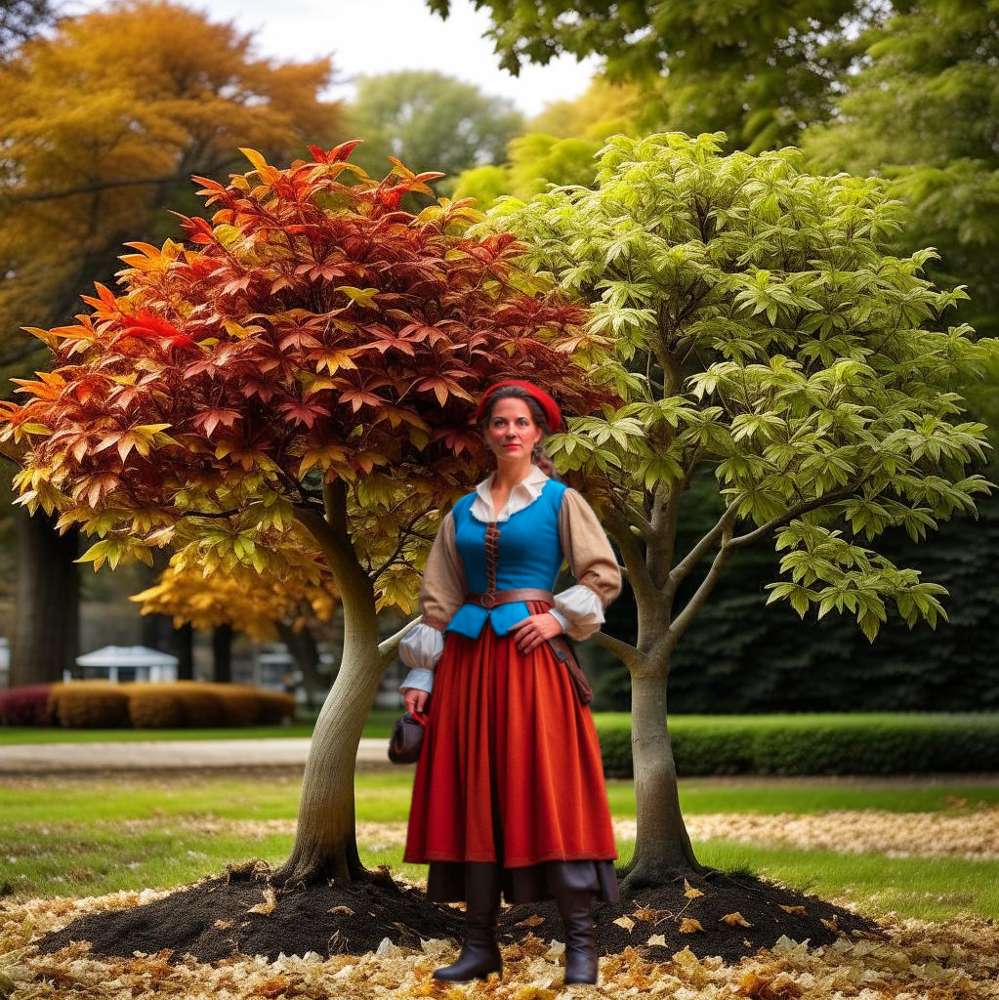

Два клена - продолжение 2.
Евгений Шварц
ДЕЙСТВИЕ ТРЕТЬЕ Декорация первого действия. Время близится к рассвету. Горит костёр. В а с и л и с а стоит возле клёнов, поглядывает па них озабоченно.
В а с и л и с а. Ребята, ребята, что вы дрожите-то? Беду почуяли? Или ветер вас растревожил? Отвечайте, отвечайте смело! Авось я и пойму.
Е г о р у ш к а. Мама, мама, слышишь, как лес шумит?
Ф ё д о р. И все деревья одно говорят.
Е г о р у ш к а. "Братцы клёны, бедные ребята!" Ф ё д о р. "Береги-и-итесь! Береги-и-и-тесь!" Е г о р у ш к а. "Выползла Баба-Яга из своей избушки!" Ф ё д о р. "А в руках у неё то, что деревцу страшнее всего".
Е г о р у ш к а. "Топор да пила, пила да топор?" В а с и л и с а. Слов ваших не разобрала, но одно поняла: страшно вам, дети. Ничего, бедняги, ничего. Перед рассветом мне и то жутко. Темно, холодно, над болотами туман ползёт. Но вы потерпите. Солнце вот-вот проснётся. Правду говорю. Оно своё дело помнит. А Баба-Яга у нас под присмотром. Друзья пошли разведать, не затеяла ли чего злодейка.
Вбегает м е д в е д ь.
М е д в е д ь. Баба-Яга пропала!
В а с и л и с а. Как - пропала?
М е д в е д ь. Выползла она из избушки, а у неё в руках... Не буду при Фёдоре и Егорушке говорить что. Вышла она. Мы за ней. А она прыг - и вдруг растаяла, как облачко, вместе с пилой и топором. И всё. Я скорее сюда, тебе в помощь. А Шарик за нею. Для пса всё равно, видно её или не видно, растаяла она или нет. Шарик по горячим следам летит. Не отстанет. Он...
Вбегает Ш а р и к.
Ш а р и к. Хозяйка, хозяйка, выдери меня, вот я и прут принёс!
М е д в е д ь. А что ты натворил, такой-сякой?
Ш а р и к. След потерял! Вывела меня Баба-Яга к болотам, по воде туда, по воде сюда - и пропала. Но ничего! Котофей уселся на берегу, замер, как неживой, прислушивается. Он её, как мышь, подстережёт. А я скорей сюда, чтобы ты меня, хозяйка, наказала.
В а с и л и с а. Я не сержусь. У Бабы-Яги что - шапка-невидимка есть?
М е д в е д ь. Есть. Старенькая, рваненькая, по скупости новую купить жалеет. Однако в сумерки работает шапка ничего. Ты, хозяйка, не думай! Шапка не шапка, но от Котофея Ивановича старухе никуда не уйти!
К о т о ф е й И в а и о в и ч неслышно появляется у ног Василисы.
К о т о ф е й И в а н о в и ч. Ушла Баба-Яга.
М е д в е д ь. Ушла?
К о т о ф е й. Ничего не поделаешь, ушла.
В а с и л и с а. А где Иванушка?
К о т о ф е й. Это я тебе потом скажу!
М е д в е д ь. Что же делать-то? Плакать?
К о т о ф е й. Зачем плакать?
М е д в е д ь. А что же нам, бедненьким, осталось?
К о т о ф е й. Сказки рассказывать.
М е д в е д ь. Не поможет нам сказка!
К о т о ф е й. Кто так говорит, ничего в этом деле не понимает. Василиса-работница! Хозяюшка! Прикажи им сесть в кружок, а я в серединке.
В а с и л и с а. Сделайте, как он просит.
К о т о ф е й. И ты, хозяюшка, садись.
Все усаживаются вокруг клёнов. Котофей - в середине.
Слушайте меня во все уши, сказка моя неспроста сказывается. Жил да был дровосек.
М е д в е д ь. У нас? В нашем лесу?
К о т о ф е й. В соседнем.
М е д в е д ь. А, того я не видал, только слыхал о нём. Это такой чернявенький?
К о т о ф е й. Зачем ты меня перебиваешь, зачем спрашиваешь?
М е д в е д ь. После того как я упустил Бабу-Ягу, мне кажется, что все на меня сердятся. Я понять хочу, разговариваешь ты со мной или нет.
К о т о ф е й. Я тоже Бабу-Ягу упустил.
М е д в е д ь. На тебя ворчать не будут, побоятся. А я сирота простой.
К о т о ф е й. Ладно, ладно, не сердимся мы на тебя, только слушай и не перебивай. Жил да был дровосек, уж такой добрый, всё отдаст, о чём ни попроси. Вот однажды зимой приходит он из лесу без шапки. Жена спрашивает: "Где шапка, где шапка?" - "Одному бедному старику отдал, уж очень он, убогий, замёрз". - "Ну что ж, - отвечает жена, - старому-то шапка нужнее". Только она это слово вымолвила, под самой дверью: динь-динь, топ-топ, скрип-скрип. И тоненький голосок зовёт, кричит: "Откройте, откройте, пустите погреться!" Открыл дровосек дверь - что за чудеса? За порогом кони ростом с котят, стоять не хотят, серебряными подковками постукивают, золотыми колокольчиками позвякивают. И ввозят они в избу на медных полозьях дровосекову шапку. А в шапке мальчик не более моей лапки, да такой славный, да такой весёлый! "Ты кто такой?" - "А я ваш сын Лутонюшка, послан вам за вашу доброту!" Вот радость-то!
Ш а р и к (вскакивает) . Гау, гау, гау!
К о т о ф е й. Ищи, ищи, ищи!
Ш а р и к. Баба-Яга крадётся.
К о т о ф ей. А ну, ну, ну, ищи, ищи, ищи!
Ш а р и к. Нет! Ошибся.
К о т о ф е й. А ошибся, так не мешай! Стали они жить да поживать, дровосек, да его жена, да сын их Лутонюшка. Работал мальчик - на диво. Он на своих конях и чугуны из печи таскал, и за мышами гонялся, а весной все грядки вскопал. Выковал он себе косу по росту - овец стричь. Ходит по овцам, как по лугам, чик-чик, жвык-жвык - шерсть так и летит. И побежала по всем лесам о Лутонюшке слава. И призадумалась их соседка злодейка-чародейка: "Ах, ох, как бы мне этого Лутонюшку к рукам прибрать? Работает, как большой, а ест, как маленький". Взвилась она под небеса и опустилась в Лутонины леса. "Эй, дровосек, отдавай сына!" - "Не отдам?" - "Отдавай, говорят!" - "Не отдам!" - "Убью!" И только она это слово вымолвила, вылетает ей прямо под ноги Лутонюшка на своём боевом коне. Захохотала злодейка-чародейка, замахнулась мечом - раз! - и мимо. Лутонюшка мал, да увёртлив. Целый день рубился он со злодейкой, и ни разу она его не задела, всё он её колол копьём. А как стемнело, забрался Лутонюшка на дерево, а с дерева злодейке на шлем. Хотела она сшибить Лутонюшку, да как стукнет сама себя по лбу. И села на землю. И ползком домой. С тех пор носа не смеет она показать в Лутонины леса.
М е д в е д ь. А как звали эту злодейку-чародейку? Что-то я в наших лесах такую не припомню.
К о т о ф е й. А звали её Баба-Яга!
Б а б а - Я г а (она невидима) . Врёшь!
Иванушка вырастает возле того места откуда раздался голос, подпрыгивает, хватает с воздуха что-то. Сразу Баба-Яга обнаруживается перед зрителем. Иванушка пляшет с шапкою-невидимкою в руках. Баба-Яга бросается на него.
В а с и л и с а. Надень шапку-невидимку, сынок!
Иванушка пробует надеть шапку. Но Баба-Яга успевает её схватить. Некоторое время каждый тянет сё к себе. Но вот ветхая шапка разрывается пополам, и противники едва не падают на землю. Подоспевшая к месту столкновения Василиса-работница успевает подобрать топор и пилу, которые Баба-Яга уронила, сражаясь за шапку.
Б а б а - Я г а. Безобразие какое у меня в хозяйстве творится! Прислуга, вместо того чтобы спать, сидит да хозяйкины косточки перебирает. Я до этого Лутонюшки ещё доберусь! Всем вам, добрякам, худо будет, конец пришёл моему терпению! (Уходит) И в а н у ш к а. Ха-ха-ха! Видишь, мама, как славно мы с Котофеем Ивановичем придумали. Ушли мы с озера, а Баба-Яга за нами. А Котофей стал сказку рассказывать. А я лежу за кустами, не дышу. А Котофей рассказывает. А я всё не дышу. И тут она к-а-а-ак проговорится! И я - прыг! Всё вышло как по писаному! Конечно, обидно, что я не догадался шапку-невидимку надеть. Она и дома пригодилась бы в прятки играть! Но всё же сегодня я помог тебе больше, чем вчера. Правда, мама?
В а с и л и с а. Правда, сынок.
Солнце всходит. Первые лучи его падают на поляну.
Видишь, Феденька, видишь, Егорушка, как я обещала, так и вышло. Солнце проснулось, туман уполз, светло стало. Весело. Что притихли, дети? Скажите хоть слово!
Ф ё д о р. Мама, если бы ты знала, как трудно мальчику в такое утро на одном месте стоять!
Е г о р у ш к а. Если бы ты знала, мама, как трудно мальчику, когда за него сражаются, за него работают, а он стоит как вкопанный.
В а с и л и с а. Не грустите, не грустите, дети, недолго вам ждать осталось!
За сценой сердитый голос Бабы-Яги: "Кыш! Куда! Вот сварю из вас куриную похлёбку, так поумнеете!" Выезжает избушка на курьих ножках. Б а б а - Я г а сидит развалясь в кресле за открытой дверью. .
Б а б а-Я г а. Шагайте веселей. Курьи ножки, а плетутся, как черепашьи! Тпру!
Избушка на курьих ножках останавливается.
Ох, устала!
М е д в е д ь. Чего тебе уставать-то! Чужим трудом живёшь.
Б а б а - Я г а. Ох, что он говорит! Ты думаешь, это легко чужим трудом жить? Думаешь, это сахар ничего не делать? Я ещё девочкой-ягой была, в школу бегала, а уже покоя и на часик не знала. Ваш брат работничек вытвердит, бывало, все уроки да и спит себе, а я, бедная малютка-яга, с боку на бок ворочаюсь, всё думаю, как бы мне, милочке, завтра, ничего не зная, извернуться да вывернуться. И всю жизнь так-то. Вы, работники простые, работаете да песенки поёте, а я надрываюсь, чтобы ничего не делая жить, по-царски. И приходится мне, бедной, и по болотам скакать, и мечом махать, только бы люди на меня работали. Ну, Василиса, что тебе приказать?
В а с и л и с а. Решай, Баба-Яга.
Б а б а - Я г а. Думала я, думала и придумала. Дам я тебе работу полегче, чтобы бранить тебя было попроще. Гляди на мою избушку. В окно ко мне не влезть. Такие решётки, что и я даже не выломаю. Брёвна до того крепкие, что никаким топором и щепочки не отколоть. А замка нет. Сделай мне на дверь замок, может быть, я тебя и похвалю. Берёшься?
В а с и л и с а. Берусь.
Б а б а - Я г а. Делай, а я пока на себя в зеркало полюбуюсь. (Смотрится в зеркало) У, ты, шалунья моя единственная! У-тю-тю-тю! Сто ей в головуску, кросецке, плисло! Замоцек ей сделай! У-тю-тю-тю!
В а с и л и с а. А ну-ка, Мишенька, согни мне этот прут железный пополам.
М е д в е д ь. Готово.
В а с и л и с а. А ты, Иванушка, обстругай мне эту дощечку.
И в а н у ш к а. Сейчас, мама.
В а с и л и с а. А ты, Котофей Иванович, обточи это колечко.
К о т о ф е й. Давай, хозяйка.
В а с и л и с а. А ты, Шарик, посторожи чтобы не ушла Баба-Яга.
Б а б а - Я г а. А я никуда и не собираюсь нынче. Мне и дома хорошо. Работают... Смотрите-ка! Никогда я этого не видала. Всегда, бывало, на готовенькое прихожу. Как называется ящичек, что у Ивашки в руках?
В а с и л и с а. Рубанок.
Б а б а - Я г а. А зачем он эти белые ленточки делает? На продажу?
В а с и л и с а. Это стружка.
М е д в е д ь. Да не притворяйся ты, Баба-Яга! Видел я, как ты топором да пилой орудуешь!
Б а б а - Я г а. Срубить да свалить я, конечно, могу. Это дело благородное. А строить - нет, шалишь. Это уж вы для меня старайтесь. А что это за палочка у тебя в руках?
В а с и л и с а. Напильник.
Б а б а - Я г а. Подумать только! Ах, бедные, бедные людишки! И зачем это вы работаете!
В а с и л и с а. Скоро увидишь зачем.
Б а б а - Я г а. Надеешься детишек спасти?
В а с и л и с а. Надеюсь.
Б а б а - Я г а. Любишь своих сыновей?
В а с и л и с а. А конечно, люблю.
Б а б а - Я г а. А которого больше?
В а с и л и с а. А того, которому я нынче нужнее. Заболеет Фёдор - он мой любимый сын, пока не поправится. Иванушка в беду попадёт - он мне всех дороже. Поняла?
М е д в е д ь. Что ты, матушка, где ей!
Б а б а - Я г а. А вот и поняла. Наука нехитрая. Одного я только понять не могу: как детишки не прискучили тебе, пока маленькими были да пищали с утра до вечера без толку? Я, красавица, давно бы таких - раз, да и за окошко!
В а с и л и с а. Вот и видно, что ты баба-яга, а не человек. Разве малые дети без толку пищат? Это они маму свою зовут, просят по-своему: "Мама, помоги!" А как поможешь им, тут они и улыбнутся. А матери только этого и надо.
Б а б а - Я г а. А как подросли твои крикуны да стали чуть поумнее, разве не замучили они тебя своеволием, не обидели непослушанием? Ты к ним - любя, а они от тебя - грубя. Я бы таких сразу из дому выгнала!
В а с и л и с а. Вот и видно, что ты баба-яга а не человек. Разве они нарочно грубят? Просто у них добрые слова на донышке лежат, а дурные на самом верху. Тут надо терпение иметь... Готово! Вставлен замок в двери.
Б а б а - Я г а. Что-то больно скоро. Непрочный небось!
В а с и л и с а. Погоди браниться, испробуй сначала. (Закрывает дверь) Замок защёлкивается со звоном. Баба-Яга остаётся в избе.
Красиво звонит замок?
Б а б а - Я г а. Нет, некрасиво! Что? Поймала? Нашла дурочку! Похвалила я тебя!
В а с и л и с а. Похвалишь, не удержишься!
Б а б а - Я г а. Ха-ха-ха!
В а с и л и с а. Чем смеяться - попробуй-ка дверь открыть.
Б а б а - Я г а. (дёргает дверь) Ах ты дерзкая! Ты заперла меня?
В а с и л и с а. Заперла, Баба-Яга. Хорош мой замок?
Б а б а - Я г а. Плох!
В а с и л и с а. А плох, так попробуй выйди.
Вся изба дрожит. Баба-Яга воет. Голова её показывается в окне.
Б а б а - Я г а. Василиса! Открой! Я приказываю!
В а с и л и с а. Хорош мой замок?
Б а б а - Я г а. Всё равно не похвалю.
В а с и л и с а. Ну, тогда и сиди в избе. Не шуми, не стучи. От брёвен и щепочки не отколоть, так они крепки.
Б а б а - Я г а. Курьи ножки! Затопчите дерзкую!
Курьи ножки переминаются, а с места не двигаются.
Вперёд!
Курьи ножки не двигаются.
М е д в е д ь. Не послушаются они тебя.
Б а б а - Я г а. Это ещё почему?
М е д в е д ь. Сколько они тебе лет служили - доброго слова ни разу не слышали. А Василиса-работница и поговорила с ними как с людьми, и песенку им спела.
Б а б а - Я г а. Василиса, если ты меня не выпустишь, такая беда может случиться, что ни в сказке сказать, ни пером описать.
В а с и л и с а. Что же это за беда?
Б а б а - Я г а. Я с горя заболею.
М е д в е д ь. Не верь, не заболеет.
Б а б а - Я г а. Василиса, ты пойми, всё равно я тебя погублю. Меня, злодейку, нельзя, ну просто никак невозможно победить! Мой будет верх.
В а с и л и с а. Никогда! Ты за всю свою жизнь ящичка простого не сколотила, корзинки не сплела, травинки не вырастила, сказочки не придумала, песенки не спела, а всё ломала, да била, да отнимала. Где же тебе, неумелой, с нами справиться?
Б а б а - Я г а. Эй, Людоед Людоедыч! Беги сюда бегом! Нас, злодеев, обижают! Помоги!
М е д в е д ь. Придёт он, как же! Ты с ним из-за двух копеек поссорилась и прогнала из наших лесов. Из людоедов тут одни комары остались, а они не больно страшны.
Б а б а - Я г а. Ведьма, а ведьма! Беги сюда бегом, подружка! Спаси!
М е д в е д ь. И с ней ты поссорилась из-за гроша.
Б а б а - Я г а. Говори, Василиса, чего ты хочешь?
В а с и л и с а. Освободи моих сыновей.
Б а б а - Я г а. Ни за что! Не добьёшься! Вот так и будут они стоять друг против друга до скончания веков. Я тебя не послушаюсь!
В а с и л и с а. Послушаешься!
Б а б а - Я г а. Ни за что!
В а с и л и с а. Курьи ножки! Несите её в болото, туда, где поглубже.
Курьи ножки идут послушно.
Б а б а - Я г а. Куда вы, куда вы! Вы и сами там погибнете!
К у р ь и н о ж к и. Мы-то выкарабкаемся, цапастенькие.
Б а б а - Я г а. Василиса, верни их!
В а с и л и с а. Цып-цып-цып!
Избушка возвращается.
Б а б а - Я г а. Василиса, давай мириться.
В а с и л и с а. Освободи моих детей.
Б а б а - Я г а. Подойди ко мне поближе, я тебе что-то скажу.
В а с и л и с а. Говори при всех.
Б а б а - Я г а. Стыдно.
В а с и л и с а. Ничего, говори.
Б а б а - Я г а. Освободить-то я их... этого... не умею.
В а с и л и с а. Не лги.
Б а б а - Я г а. Клянусь своим драгоценным здоровьем! Это не я их в клёны обратила, а ведьма, моя подручная. Она получала у меня алтын с человека.
Ф ё д о р. Это правда, мама.
Е г о р у ш к а. Возле неё какая-то старушка вертелась с ореховой палочкой.
В а с и л и с а. Курьи ножки, в болото!
Б а б а - Я г а. Стой, стой! Освободить я их не могу, а как сделать это, знаю.
В а с и л и с а. Говори!
Б а б а - Я г а. Иди ты всё время на восток, не сворачивая. Всё пряменько, пряменько, пряменько. Поняла? Попадётся болото - ничего, шагай через болото. К морю выйдешь - плыви через море, только не сворачивай, а то заплутаешься. А как выйдешь на берег, по правую руку увидишь ты лес втрое выше нашего, а листья там не зелёные, а белые, седые - уж больно тот лес стар. А посреди леса увидишь ты холм, весь он белой травою порос, а в том холме - пещера. А посреди пещеры - белый камень. Отвалишь ты камень, а под ним колодец. А вода в том колодце кипит, бурлит, словно кипяток, и сама собою светится. Принеси той воды кружечку, покропи клёны, и они тотчас же оживут. Вот и всё. Фу, устала! Никогда в жизни столько не говорила о других, всё, бывало, о себе, о птичке-малышке.
Вас и л и с а. А сколько туда ходу?
Б а б а - Я г а. Не менее году.
Фёдор и Егорушка вскрикивают горестно.
В а с и л и с а. Обманываешь ты!
М е д в е д ь. Нет, не обманывает. Вот радость-то! (Хохочет) Вот горе-то! (Плачет) В а с и л и с а. Что с тобой?
М е д в е д ь. Успокоюсь - расскажу.
Б а б а - Я г а. Иди, иди, Василиса. Не теряй времени.
В а с и л и с а. Мы и тебя захватим.
Б а б а - Я г а. Избушка на курьих ножках через чащу не проберётся. А выпускать меня - как можно! Ускользну! Нет, уж придётся вам одним шагать. Год туда - год обратно, а за два года мало ли что может приключиться. Может, всё ещё по-моему повернётся! Иди, иди, чего ждать-то!
В а с и л и с а. Постой, дай с друзьями посоветоваться. (Отходит в сторону со всеми своими друзьями) Что с тобой, Миша, делается? Почему ты то смеёшься, то плачешь?
М е д в е д ь. Ха-ха-ха! Ох-ох-ох! Вот оно, наше спасение, тут, возле, а не ухватишь.
В а с и л и с а. Почему?
М е д в е д ь. Василиса, родимая, слушай. Сейчас я, ха-ха, расскажу, ох-ох, всё по порядку. Помнишь, я говорил тебе, что моего деда Змей Горыныч просто так, для смеху, взял да и опалил огнём?
В а с и л и с а. Помню, Мишенька.
М е д в е д ь. Когда приключилась у нас эта беда, отец мой, Потап Михайлович, кубарем в пещеру. К живой воде. И домой со всех ног. Мы тогда недалеко от пещеры этой жили. Ха-ха-ха! Ох-ох-ох!
И в а н у ш к а. Да рассказывай ты, не томи душу!
М е д в е д ь. Возвращается он с ведром живой воды. Горе, горе! Лежит старик и не дышит. Вокруг родня плачет. Лес насупился, как осенью. Обрызгали деда живой водой - что за чудеса: шерсть опалённая закурчавилась, как новая, старое сердце забилось, как молодое, встал дед и чихнул, а весь лес ему: на здоровье. Ха-ха-ха! Ой-ой-ой!
Ш а р и к. Да не плачь ты, хозяин, а то и я завою!
В а с и л и с а. Рассказывай дальше.
М е д в е д ь. И остался у меня с тех пор целый кувшин живой воды. Ха-ха-ха!
В а с и л и с а. Где же кувшин-то?
М е д в е д ь. В сундучке моём. Ха-ха-ха!
В а с и л и с а. А сундучок где?
М е д в е д ь. У Бабы-Яги в избушке. Она его под печкой держит. Чтобы я не уволился без спросу. Ох-ох-ох!
В а с и л и с а. Придётся отпереть замок-то! .
К о т о ф е й. Нельзя. Ускользнёт мышка наша из своей мышеловки. Мы иначе сделаем. Я прыгну тихонько на крышу да по трубе печной - в избу. Да и добуду всё, что требуется.
М е д в е д ь. Почует она!
Ш а р и к. Ничего. Я её раздразню, и она ничего не услышит.
Кот исчезает (Бежит к избе) .Баба-Яга! Ты хвастала, будто по-собачьи понимаешь?
Б а б а - Я г а. А конечно, понимаю. Для того чтобы ссориться, нет лучшего языка, чем собачий. А я, мушка, люблю ссориться!
Ш а р и к. Гау, гay, гay! Скажи, что это значит?
Б а б а - Я г а. А это значит: сюда, охотник, белка на сосне.
Ш а р и к. Смотри, и вправду понимает. А это? (Лает) Б а б а - Я г а. Поди сюда, я тебе хвост оторву.
Ш а р и к. А это? (Лает.) Б а б а - Я г а. Ах ты, дерзкий пёс!
Ш а р и к. Не поняла?
Б а б а - Я г а. Ты посмел мне сказать, что я любого голубя добрее? Так вот же тебе за это! (Лает) Шарик отвечает ей тем же. Некоторое время они лают яростно друг на друга, как псы, которые вот-вот подерутся.
(Внезапно обрывает лай.) Караул, грабят!(Исчезает) В избе мяуканье, фырканье, вопли, потом полная тишина.
Ш а р и к. Boy, воу! Погиб наш котик! Boy!
И в а н у ш к а. Мне надо было бы полезть.
М е д в е д ь. Да разве ты в трубу пробрался бы? Это я, окаянный, во всём виноват. Зачем я живую воду в сундучке держал?
Ф ё д о р. А мы-то стоим и с места двинуться не можем!
Ш а р и к. Воу, воу! Уж так я ругал её обидно, ангелом называл - и то не помогло. Воу, воу!
В а с и л и с а. Да погодите, может быть, он ещё и жив и здоров. Кс-кс-кс!
Молчание.
И в а н у ш к а. Бедный котик!
В а с и л и с а. Постойте, погодите! Я забыла, что он даже и не понимает, что такое "кс-кс-кс". Кот строгий. Котофей Иванович!
Г о л о с с к р ы ш и: "Мур!" М е д в е д ь. Жив!
Ш а р и к. Что же ты не идёшь, сердце мне надрываешь?
К о т о ф е й (издали). Вылизываюсь. В саже вымазался.
М е д в е д ь. А мы думали, что ты погиб.
К о т о ф е й (издали) . Нет, она меня было цапнула за хвост, да я отбился. (Прыгает с крыши, в лапах большой кувшин.) В а с и л и с а. Этот кувшин, Миша?
М е д в е д ь. Он самый!
Б а б а - Я г а (в окно). Выдохлась вода, выдохлась, выдохлась!
Е г о р у ш к а. Мама!.
В ас и л и с а. А ну-ка, отойдите в сторонку, друзья.
Все отходят в сторону. Василиса подходит к клёнам. Кувшин тщательно перевязан и закупорен круглым дубовым бруском. Когда Василиса вынимает брусок, из кувшина поднимается синее пламя.
Б а б а - Я г а. Горе какое, не выдохлась!
Василиса брызжет живой водой на клёны. И тотчас же они исчезают в синеватом тумане. Глухо-глухо, как из-под земли, звучит музыка. Но вот она становится всё явственнее, всё веселее. Туман рассеивается. Клёны исчезли. На поляне стоят два мальчика одного роста, они похожи друг на друга и на Иванушку. Они оглядываются растерянно, как будто только что проснулись, и вдруг замечают Василису. Они вскрикивают: "Мама!" В а с и л и с а (обнимает их). Мальчики мои, мальчики!
К о т о ф е й. Радуйтесь, радуйтесь, теперь вас никто не посмеет тронуть.
Е г о р у ш к а. Иванушка!
Ф ё д о р. Братец! (Обнимает брата) В а с и л и с а. Дети мои, дети! Какими пропали, такими и нашлись! И на денёк старше не стали!
Ф ё д о р. Мама, мы больше не будем!
Е г о р у ш к а. Мы теперь будем расти не по дням, а по часам!
Ф ё д о р. Мама, идём, идём. Мы столько стояли на этой поляне...
Е г о р у ш к а. ...что ноги больше стоять не хотят. Прощайте, деревья-друзья, не обижайтесь, нам домой пора.
Д е р е в ь я (шелестят негромко, но явственно) . Прощайте, прощайте, братцы клёны! Не обижайте нас! Не забывайте, что мы живые. Не разучитесь говорить по-нашему, когда домой вернётесь.
Ф ё д о р. Никогда не разучимся!
Б а б а - Я г а. Кончится ли это безобразие? Стоят и радуются у меня на глазах! Знаете, кажется, что я терпеть не могу, когда люди радуются. Отпустите меня сейчас же!
В а с и л и с а. Никогда! Мы пойдём домой и тебя захватим. И дома всем миром решим, что с тобой делать.
Б а б а - Я г а. Отпусти, я тебе все свое золото отдам!
В а с и ли с а. Не отпущу! Давайте руки, друзья.
Все подают друг другу руки.
Вперёд! Курьи ножки, за мной!
Идут, избушка - следом.
К о т о ф е й. Вот и сказке нашей конец, а кто нас понял, тот молодец!
Занавес.